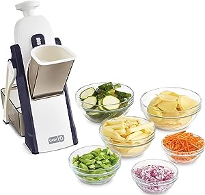
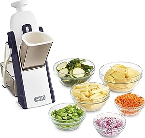

With KitchenAid mixer accessories and attachments, the power and reliability of your KitchenAid mixer can transform your cooking experience! Use accessories like whisks, hooks, and more to bake cookie batches, delicious meringue, all in beautiful, designer bowls. And don't forget about creamy ice cream to spiralized vegetables, there's an attachment to make even the toughest kitchen tasks simple. Save time, save money, save hassle - let the perfect KitchenAid mixer accessories & attachments do all the work for you!